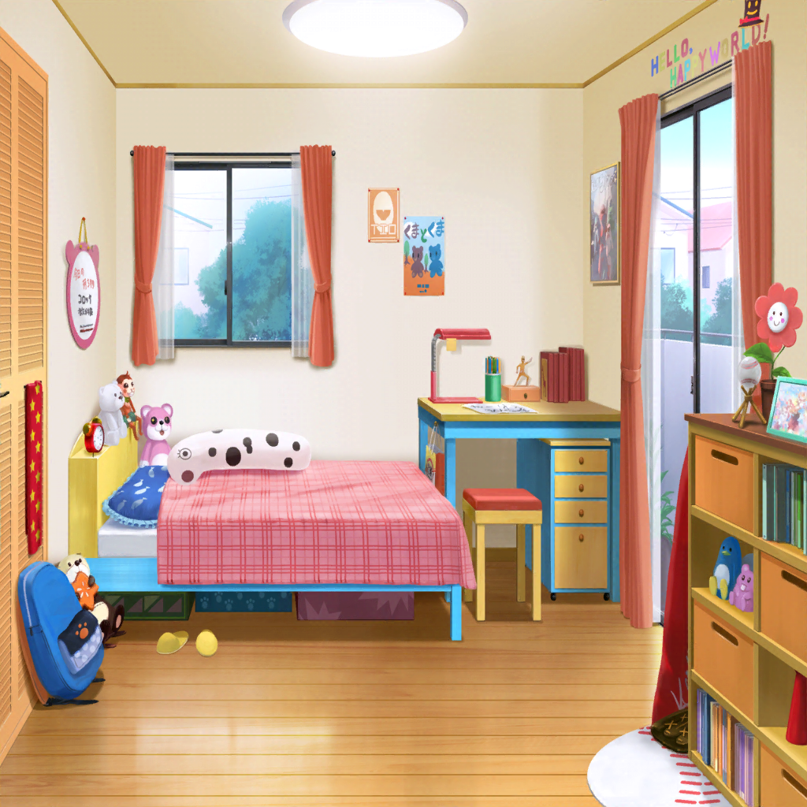

北沢家 はぐみの部屋
有咲
それじゃあ……そろそろ帰るか？
香澄
うん、そうだね！
はぐー、今日は１日ありがとうね！
大事な思い出が、たっくさんよみがえってきたよ！
沙綾
ごめんね、はぐみ。長居しちゃって
はぐみ
あ、ちょっと待って！
とーちゃんが、せっかくだから夜ご飯食べて行けって言ってる！
今日は特別に、はぐみのお部屋でご飯食べていいって！
香澄
え！？ はぐのウチで夜ご飯！？
それって、みんなで！？
はぐみ
もっちろん！
それに今、絶賛開発中の新作コロッケがあるから、
その感想を聞かせて欲しいんだって！
沙綾
へぇ～、北沢精肉店の新作コロッケねー。
それはかなり興味あるなー
はぐみ
でしょー？
はぐみもみんなといっしょにご飯食べたいし、
いいよね、かーくん？
香澄
うう……すっごい食べていきたい……
けど、今からだと帰りが遅くなっちゃうから……
はぐみ
ふっふ～ん♪ それなら大丈夫だよっ！
帰りはとーちゃんが車で送ってくれるって！
香澄
えぇ、本当にっ！？ やったーっ！
それじゃあ私、食べていくね！
あ、家に電話しておかなきゃ！
有咲
香澄って、ホントに切り替えはえーな……
はぐみ
じゃじゃーん！ おまたせー！
これがとーちゃん特製、新作コロッケだよーっ！
香澄
わっ！ 山盛りになってるよ！
有咲、見て見て！
有咲
ちょっと落ち着けって。
興奮しすぎ
沙綾
けど、興奮しちゃう気持ちもわかる！
揚げたてで、ホントにいい香りするもん
はぐみ
新作は何種類かあるから、順番に食べていってね！
香澄
はーい！
どんなコロッケなんだろ？ 楽しみだなー♪
はぐみ
それじゃあ、まずはコレ！
その名もイタリアンコロッケ！
コロッケの中にチーズと特製ミートソースが入ってるんだよっ！
香澄
わぁ！ チーズとミートソース……っ！？
もう説明を聞いただけで美味しそう！
ではでは……いただきまーす！
香澄
んんっ！
わ、わ～！ これは……っ
沙綾
噛んだ瞬間に中からチーズとミートソースが溢れてきて……
すっごい美味しいよ、これっ！
有咲
確かにマジでヤバイな、これは……っ。
ポテトとミートソースの相性が抜群だな……っ
はぐみ
わーい、ありがとー！
イタリアンコロッケは、とーちゃんのイチオシなんだ！
香澄
これは絶対売れると思う！
私も毎日買っちゃうかも！
はぐみ
えへへ♪ そう言ってくれるととーちゃんも喜ぶよ！
そしたら次は……こっちの丸いコロッケね！
その名もアメリカンコロッケだよっ！
有咲
アメリカンコロッケ……？
中にハンバーガーでも入ってるのか？
はぐみ
あーちゃん、いい線行ってる！
けど、残念ながら中に入ってるのは
ハンバーガーじゃなくてポップコーンだよ！
香澄
コロッケの中に、ポップコーン！？
な、なんか斬新だね……
それじゃあ、いただきまーす
沙綾
なんていうか……不思議な食感……だね？
味はわりと美味しいけど……
有咲
く、口の中の水分が、
ものすごい勢いで奪われていくぞ、これ……
香澄
はぐーっ。
わ、悪いけどお水くれる……？ ゴホ……っ
はぐみ
あ、あれ？ アメリカンコロッケはちょっと微妙だったかな？
ふむふむ……改良の余地あり、と……
それじゃあ次にいってみよう！
はぐみ
イタリアン、アメリカンときたら、次はやっぱり中華だよ！
香澄
コロッケの中に、餃子を入れちゃったんだ……
はぐのお父さんの発想って、すごいね……
有咲
ていうか、わざわざコロッケの中に入れる必要あるか？
沙綾
まあまあ、とりあえず食べてみよう。
コロッケにすることで、予想外の変化が
あるかもしれないし
香澄
それでは一口、あーんっ……んんんっ！
わ、結構大きい餃子が入ってるよ！
……うん、意外と悪くないかも……
沙綾
ただ……良くもないって言うか……
有咲
だよな？
味が混ざっちゃって、すっげー微妙な感じ……
これって普通に別々で食べたほうが美味しいんじゃないか？
はぐみ
そっかー、ふむふむ。改良の余地あり、だね。
とーちゃんに言っておくね
香澄
あっ、なんかごめんね、はぐ。
せっかくごちそうしてもらってるのに……
はぐみ
ううん！ いいのいいの！
みんなから貴重な意見がもらえて、
とーちゃんもうれしいと思う！
香澄
ねえねえ、はぐ！ こっちのコロッケは？
このコロッケは、まだ食べてないよね？
はぐみ
あ、ごめん！ そのコロッケをまだ紹介してなかった！
それはロシア風コロッケ！
何が入ってるかは、食べてみてのお楽しみだよ！
香澄
ロシア風って……何が入ってるの！？ 楽しみー！
それじゃあ、いただきまーす！
あーむっ……んんっ！？ こ、これは……っ！
有咲
コロッケの中から……
小さいコロッケが出てきたぞっ！？
はぐみ
そのとーり！
北沢精肉店自慢のコロッケをコロッケで包み込んだ、
きゅーきょくのコロッケだよ！
有咲
コロッケの中に、コロッケ……
これがロシア風って……あ、マトリョーシカのことか？
人形の中に人形が入ってるやつ……
有咲
けど、それって……
……意味なくね？
沙綾
うん……
中に衣が混ざってる以外は、普通のコロッケだよね……
香澄
けど、これ美味しい！ 美味しいよはぐっ！
このロシア風コロッケが１番好きかも！
はぐみ
だよねだよね！？
はぐみもこれが１番好きなんだ！
やっぱり、かーくんとは気が合うなー！